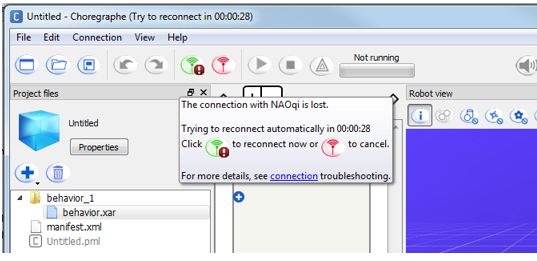
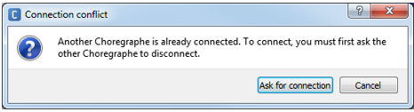
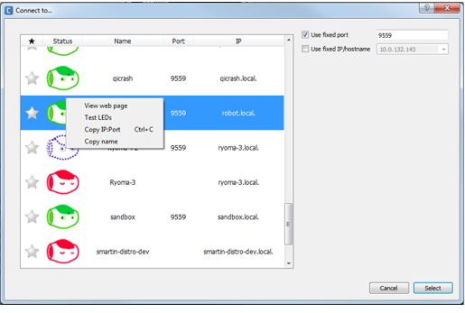
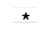
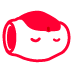
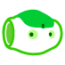
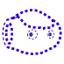

Connecting Choregraphe to a robot¶
Overview¶
Connecting Choregraphe to an Aldebaran robot¶
To connect Choregraphe to:
- a real Aldebaran robot, see How to connect Choregraphe to a robot,
- a simulated robot, see How to connect Choregraphe to a simulated robot.
Disconnecting Choregraphe¶
To end the connection between Choregraphe and a robot:
- Choose Connection > Disconnect or
- Choose Connection > Connect to virtual robot in order to reconnect Choregraphe to the virtual robot launched by default.
Managing Connection troubles¶
In case of connection troubles, a tooltip offers guidance to fix the problem.
{kind=link}
See also the Troubleshooting.
How to connect Choregraphe to a robot¶
To connect Choregraphe to a robot:
| Step | Action |
|---|---|
Choose the Connection > Connect to menu or Click the The Connect to panel is displayed. |
|
| Select a robot. | |
Click the Select button. If another instance of Choregraphe is already connected to the robot, a message box allows you to request the connection.  |
|
| Result | When the connection is successfully done:
|
{kind=link}
Connect to panel¶
The Connect to panel allows you to connect Choregraphe to a robot.
{kind=link}
Accessing the Connect to panel¶
To display the Connect to panel:
- Choose Connection > Connect to or
- Click the
 Connect to button.
Connect to button.
List of robots¶
The table below describes the columns of the list of robots.
| Name | Description | For further details, see ... |
|---|---|---|
|  | Enables you to add a robot to Favorites. | Favorite |
| Status | Displays the type and state of the robot. | Type and state |
| Name | The robot’s Name. | |
| Port | The port used to connect to the robot. | |
| IP | The IP address used to connect to the robot. |
Favorite¶
To add/remove a robot to Favorites, click the star.
| Icon | Means ... |
|---|---|

|
The robot is a Favorite robot. The next time you open Connect to panel, the favorite robots will appear at the top of the list. |

|
The robot is not a favorite robot. |
Type and state¶
| Icon | Type/State | Description |
|---|---|---|
|  | A real robot. NAOqi is not running. |
The robot is in a state in which it should be impossible to establish a connection. NAOqi has been shutdown or is in a state that doesn’t allow the connection. Note You can force the connection to this robot by enabling the option Use fixed port and then click on Connect to. It will try to solve the connection using this port (9559 by default). Note Since 2.5, only running NAOqi are displayed, this red icon is not visible anymore. |
|  | A real robot. NAOqi is running. |
You can connect Choregraphe to this robot. The contextual menu offers also the following options:
|
|  |
NAOqi is running on a computer. |
You can connect to this kind of robot. But you cannot view its webpage nor test its LEDs. Note The connection to Choregraphe’s local NAOqi is automatically done when you execute Choregraphe. This local NAOqi does not appear in the robot list, as the connection is not a network connection. However, a reconnection to this NAOqi can be done through the menu Connection > Connect to virtual robot. |
Troubleshooting¶
My robot does not appear in the list¶
Mac only: a known issue prevents the display of robot’s list.
- Use the Use fixed IP/hostname instead.
Windows / Ubuntu: make sure your robot is:
Turned on.
For further details, see: Turning NAO on or Turning Pepper on.
Connected to your network.
For further details, see: Setting NAO’s WiFi connection.
I cannot connect Choregraphe to my robot¶
If you cannot manage to connect to your robot using the list, you can connect directly to its IP address and its port:
- Select the checkbox Use fixed port, then fill in the field with its port (9559 by default).
- Select the checkbox Use fixed IP/hostname, then fill in the field with the IP Address (that you can get by pressing once on the Chest button of your robot).
- Click the Select button.
I got a synchronization error while sending my behavior to my robot¶
If your robot had rebooted while Choregraphe automatically reconnected to it, a failure can occur when sending the current behavior. As a consequence, the robot is disconnected and the behavior is not sent.
Simply reconnect the robot manually and you will be able to send your behavior again.
Connection troubles¶
In case of connection troubles on Windows, Mac or Linux, try the following in order to find out the reason:
| Step | Action |
|---|---|
Launch Choregraphe with the option –no-naoqi If it solves the problem, you should keep using the option –no-naoqi. It seems that the NAOqi embedded in Choregraphe is corrupted. Nevertheless you can connect Choregraphe to NAO. You can also simulate your behavior by launching manually naoqi from choregraphe_install_dir/bin/naoqi. |
|
Test without your firewall. If it solves the problem, you should review your firewall configuration for Choregraphe application: 2.1 Open the firewall configuration (on Windows Configuration Panel > system and security > Firewall > Authorized programs) 2.2 Remove all the choregraphe-bin references 2.3. Relaunch Choregraphe |
|
Linux or Mac only: configure the ‘ssh known hosts’. If you can’t connect to your NAO with ssh ( You should remove the line referring to your robot in the file ssh-keygen -R {IP or name of the robot}
|
|
| Reinstall Choregraphe. | |
Try with a local NAOqi: 5.1 Launch Choregraphe with the option –no-naoqi -vd 5.2 Launch naoqi on the same computer (from choregraphe_install_dir/bin/naoqi) 5.3 Connect Choregraphe to this naoqi (IP 127.0.0.1 PORT 9559) If it fixes the problem, you certainly have some troubles on your own network configuration. |
|
Ensure that NAO can connect to Choregraphe: 6.1 Connect to your NAO (with ssh or putty). 6.2 Try to ping your desktop computer IP from NAO. 6.3 Open a python shell on your NAO and create a proxy to a naoqi running on your desktop. For instance: from naoqi import ALProxy
log = ALProxy("ALLogger", DESKTOP_IP, NAOQI_DESKTOP_PORT)
log.info("python", "Hello from NAO")
If one of those two points fails, you certainly have some troubles on your own network configuration. |
|
Open the required ports in your network configuration: Choregraphe - NAOqi : 54010, 54011, 54012, ... ( as many as you have Choregraphe/Monitor instances running on the same computer). Choregraphe - ftp : 20, 21 Choregraphe - log : 50998, 50999 Choregraphe - bonjour: 5353 NAOqi: 9559 NAO - webservices : 5222, 5223 |
How to connect Choregraphe to a simulated robot¶
There are several ways to get to a simulated robot. These ways are described in: Simulated robots.
To connect Choregraphe to:
the simulated robot included in Choregraphe:
In Choregraphe, choose Connection > Connect to virtual robot menu.
To change the model and the body type of the simulated robot, see Virtual Robot in Choregraphe preferences.
an external simulated robot:
Step Action Launch NAOqi by double clicking on naoqi/naoqi-bin in your installation folder. In Choregraphe, choose Connection > Connect to... in the menu bar
or click on the
Connect to button in the tool bar.In the Connection to panel:
- if the simulated robot appears in the list, double click it,
- if not, set the IP address to 127.0.0.1 and port to 9559 and click the Select button.
a simulated robot evolving in a virtual world:
See Webots documentation about Launching a simulated robot and Connecting Choregraphe to the simulated robot.